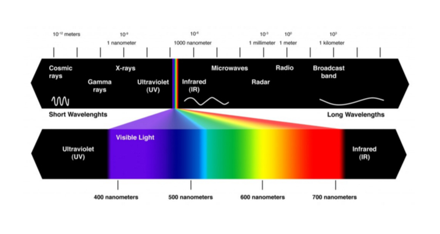
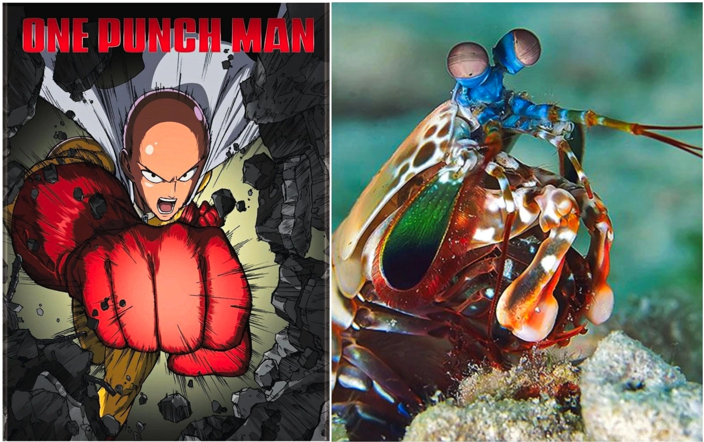

Informações Gerais
Nome científico: Odontodactylus scyllarus.
| Reino: | Animalia |
| Filo: | Arthropoda |
| Subfilo: | Crustacea |
| Classe: | Malacostraca |
| Subclasse: | Hoplocarida |
| Ordem: | Stomatopoda |
Saca a visão desse camarada
Enquanto nós reles mortais temos apenas três receptores de cores (vermelho, verde e azul), o Stomatopoda tem 12 receptores de cores primáriase mais 4 que filtram a luz.
O one punch man do mar
Quem não assistiu vai assistir porque o saitama sensei mandou. Esse camarão finho, colorido e pequeno é um verdadeiro Rocky Balboa nivel Toguro usando 100%. Sim o soco dele quebra tudo com seu impacto de 600 N/cm², para quem ainda não entendeu, é como levar um tiro de um calibre .22
Referências
- https://possibility.teledyneimaging.com/mona-lisa/
- https://nice.ncbs.res.in/2020/03/04/one-punch-man-of-the-ocean/